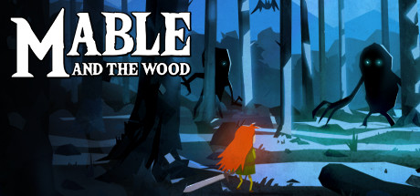

A continuación los pasos seguidos para instalar el juego Mable & The Wood distribuido por GOG en debian testing (12) a partir de la experiencia adquirida al instalar el juego Volgarr the Viking en debian.

Pasos a seguir:
- Instalar la aplicación y ver si anda de casualidad o dicho de otra forma, comprobar que no funciona en el sistema.
- Crear sistema base Ubuntu 18.04 amd64 y utilizar el dynamic loader y las librerías de dicho sistema para ejecutar el juego.
Comenzamos ejecutando el instalador, mable_the_wood_1_7_37606.sh, donde se
acepta el EULA, se elige el directorio $HOME/GOG Games/Mable The Wood para
guardar los archivos del juego y se crea el ícono en el escritorio y la entrada
en el menú.
Para probar si anda el juego lo ejecutamos:
$ cd "$HOME/GOG Games/Mable The Wood"
$ ./start.sh
Running Mable & The Wood
./Mable_PC: error while loading shared libraries: libcrypto.so.1.0.0: cannot open shared object file: No such file or directory
Buscamos el ejecutable y verificamos la arquitectura usada y las librerías no resueltas:
$ file game/Mable_PC
game/Mable_PC: ELF 64-bit LSB executable, x86-64, version 1 (SYSV), dynamically linked, interpreter /lib64/ld-linux-x86-64.so.2, for GNU/Linux 2.6.32, BuildID[sha1]=ab14d071393bba44769fa72677e1e9388fc628e8, stripped
$ ldd ./game/Mable_PC | grep -F 'not found'
libcrypto.so.1.0.0 => not found
libssl.so.1.0.0 => not found
Utilizando locate se encuentra que las librerías dinámicas libcrypto y
libssl instaladas en el sistema pertenecen al paquete libssl1.1 y que no
hay versión 1.0 disponible para debian testing
Ahora se pasa a crear un sistema Ubuntu 18.04 amd64 utilizando debootstrap como se hizo en un post anterior:
$ doas apt-get install -Vy debootstrap
$ doas /usr/sbin/debootstrap --arch=amd64 --cache-dir=/srv/cache \
bionic /srv/chroot_ubuntu_1804_amd64 http://archive.ubuntu.com/ubuntu/
Para obtener las dependencias se copia el binario dentro del sistema obtenido, se hace chroot y se utiliza ldd:
$ cp "$HOME/GOG Games/Mable The Wood/game/Mable_PC" /srv/chroot_ubuntu_1804_amd64/tmp
$ doas /sbin/chroot /srv/chroot_ubuntu_1804_amd64
# ldd /tmp/Mable_PC | grep -F 'not found'
libXxf86vm.so.1 => not found
libGL.so.1 => not found
libcrypto.so.1.0.0 => not found
libXext.so.6 => not found
libX11.so.6 => not found
libXrandr.so.2 => not found
libGLU.so.1 => not found
libcurl-gnutls.so.4 => not found
libssl.so.1.0.0 => not found
Antes de buscar que paquete provee cada librería se busca en la página web del juego las librerías indicadas. Para este juego la página no indica ninguna librería.
Viendo que hay varias libX se instala primero el paquete xorg y luego se ve
que librerías no son resueltas:
(en el chroot)
# apt-get install -Vy xorg
# ldd /tmp/Mable_PC | grep -F 'not found'
libcrypto.so.1.0.0 => not found
libcurl-gnutls.so.4 => not found
libssl.so.1.0.0 => not found
Ahora que son menos librerías se busca en el sitio web de ubuntu, filtrando por
arquitectura (amd64) y suite (bionic):
libcrypto.so.1.0.0:libssl1.0.0(*)libcurl-gnutls.so.4:libcurl3-gnutls(*)libssl.so.1.0.0:libssl1.0.0(*)
Del resultado anterior se pasan a instalar los paquetes y luego se corrobora que no queden más dependencias:
# apt-get install -Vy libssl1.0.0 libcurl3-gnutls
# ldd /tmp/Mable_PC | grep -F 'not found'
Ahora se pasan a obtener los directorios de las librerías en el chroot:
# dirname $(ldd /tmp/Mable_PC | awk '/ => / { print $3 }') | sort -u
/lib/x86_64-linux-gnu
/usr/lib/x86_64-linux-gnu
Ya que la aplicación se va a ejecutar de forma normal (fuera del chroot), se
debe utilizar la variable LD_LIBRARY_PATH que contiene las rutas anteriores
prefijadas por la ruta en la cual se encuentran los archivos de Ubuntu 18.04
amd64:
$ cd "$HOME/GOG Games/Mable The Wood/game"
$ LD_LIBRARY_PATH=/srv/chroot_ubuntu_1804_amd64/lib/x86_64-linux-gnu:/srv/chroot_ubuntu_1804_amd64/usr/lib/x86_64-linux-gnu ./Mable_PC
Inconsistency detected by ld.so: dl-call-libc-early-init.c: 37: _dl_call_libc_early_init: Assertion `sym != NULL' failed!
El error anterior se debe a que se está utilizando el dynamic loader del sistema debian en lugar del sistema ubuntu. Para corregir esto se obtiene la ruta del dynamic loader del sistema ubuntu (cuya ruta se indica en la página del manual) y se vuelve a ejecutar el programa:
$ ls -lh /srv/chroot_ubuntu_1804_amd64/lib64/ld-linux-x86-64.so.2
lrwxrwxrwx 1 root root 32 Apr 16 2018 /srv/chroot_ubuntu_1804_amd64/lib64/ld-linux-x86-64.so.2 -> /lib/x86_64-linux-gnu/ld-2.27.so
$ ls -lh /srv/chroot_ubuntu_1804_amd64/lib/x86_64-linux-gnu/ld-2.27.so
-rwxr-xr-x 1 root root 167K Apr 16 2018 /srv/chroot_ubuntu_1804_amd64/lib/x86_64-linux-gnu/ld-2.27.so
$ LD_LIBRARY_PATH=/srv/chroot_ubuntu_1804_amd64/lib/x86_64-linux-gnu:/srv/chroot_ubuntu_1804_amd64/usr/lib/x86_64-linux-gnu /srv/chroot_ubuntu_1804_amd64/lib/x86_64-linux-gnu/ld-2.27.so ./Mable_PC
***************************************
* YoYo Games Linux Runner V1.3 *
***************************************
CommandLine: -game game.unx
ExeName= /srv/chroot_ubuntu_1804_amd64/lib/x86_64-linux-gnu/ld-2.27.so
MemoryManager allocated: 44470
FAILED to load File game.unx
ShowMessage: Unable to find game!!: game.unx
Mejoramos, pero ahora el programa no está encontrando los archivos del juego.
Recordando que esto es debido a la ruta en que se encuentra el interprete
utilizado (el binario ld-2.27.so) se copia este al directorio donde se
encuentra el juego y se vuelve a ejecutar:
$ cd "$HOME/GOG Games/Mable The Wood/game"
$ cp /srv/chroot_ubuntu_1804_amd64/lib/x86_64-linux-gnu/ld-2.27.so .
$ LD_LIBRARY_PATH=/srv/chroot_ubuntu_1804_amd64/lib/x86_64-linux-gnu:/srv/chroot_ubuntu_1804_amd64/usr/lib/x86_64-linux-gnu ./ld-2.27.so ./Mable_PC
...
dlopen failed to open libopenal.so, there will be no sound!
...
Se utiliza el comando chroot para volver al sistema base de ubuntu y corroborar si es que no está la librería o hay un problema al cargarla:
$ doas /sbin/chroot /srv/chroot_ubuntu_1804_amd64
# find / -name 'libopenal.so*'
y corroboramos que la librería no se encuentra en el sistema.
Buscandola en el sitio de ubuntu llegamos a que la librería a instalar
es libopenal1 que se encuentra
en el repositorio universe, por lo que se agrega el repositorio y se instala
libopenal1:
(chroot)
# echo 'deb http://archive.ubuntu.com/ubuntu bionic main universe' > /etc/apt/sources.list
# apt-get update
# apt-get install -Vy libopenal1
(host)
$ LD_LIBRARY_PATH=/srv/chroot_ubuntu_1804_amd64/lib/x86_64-linux-gnu:/srv/chroot_ubuntu_1804_amd64/usr/lib/x86_64-linux-gnu ./ld-2.27.so ./Mable_PC
...
ALSA lib conf.c:3523:(snd_config_hooks_call) Cannot open shared library libasound_module_conf_pulse.so
ALSA lib pcm.c:2495:(snd_pcm_open_noupdate) Unknown PCM default
...
Volvemos a buscar en el sitio de ubuntu y encontramos que el paquete a instalar es libasound2-plugins:
(chroot)
# apt-get install -Vy libasound2-plugins
(host)
$ LD_LIBRARY_PATH=/srv/chroot_ubuntu_1804_amd64/lib/x86_64-linux-gnu:/srv/chroot_ubuntu_1804_amd64/usr/lib/x86_64-linux-gnu ./ld-2.27.so ./Mable_PC
y ¡EXITO!.
Una vez iniciando el juego aparece una pantalla con el texto
CONTROLLER RECOMMENDED
y este no es reconocido.
Leyendo en los foros de gog y los foros de steam se indica que en linux el joystick no está bien soportado y un workaround para que sea detectado es desconectarlo y volverlo a conectar una vez que se ejecute el juego. Haciendo esto el joystick es detectado pero no funcionan correctamente los botones, lo cual también está indicado en los foros.
Resumen
-
Instalar juego ejecutando
mable_the_wood_1_7_37606.sh, aceptar el EULA, elegir como directorio para la instalación~/GOG Games/Mable The Wood, no crear lanzador en el escritorio ni entrada en el menú. -
Crear sistema Ubuntu 18.04 amd64
$ doas /usr/sbin/debootstrap --arch=amd64 --cache-dir=/srv/cache \ bionic /srv/chroot_ubuntu_1804_amd64 http://archive.ubuntu.com/ubuntu/ -
Agregar repositorios e instalar paquetes necesarios que no se instalaron durante la creación del sistema base
$ doas /sbin/chroot /srv/chroot_ubuntu_1804_amd64 # echo 'deb http://archive.ubuntu.com/ubuntu bionic main universe' > /etc/apt/sources.list # apt-get update # apt-get install -Vy xorg libssl1.0.0 libcurl3-gnutls libopenal1 libasound2-plugins -
Copiar el dynamic loader al directorio donde se encuentran los archivos del juego:
$ cd "$HOME/GOG Games/Mable The Wood/game" $ cp /srv/chroot_ubuntu_1804_amd64/lib/x86_64-linux-gnu/ld-2.27.so . -
Ejecutar
$ LD_LIBRARY_PATH=/srv/chroot_ubuntu_1804_amd64/lib/x86_64-linux-gnu:/srv/chroot_ubuntu_1804_amd64/usr/lib/x86_64-linux-gnu ./ld-2.27.so ./Mable_PC
Apendice - pruebas joystick - 1
TL;DR: No dieron resultado.
Suponiendo que la librería que utiliza el juego para reconocer el joystick es
SDL (como lo hacen muchos juegos) podemos buscar si en el binario hay algún
indicio de que se utiliza, ya que la salida de ldd no muestra que falten
librerías por resolver:
$ strings Mable_PC | grep -i sdl
SDL_GAMECONTROLLERCONFIG
y se obtiene un indicio de que la suposición puede ser acertada.
Para probarlo se buscan los paquete nuevamente en la página de ubuntu y se comienza probando con la versión 2 de SDL:
# apt-get install -Vy libsdl2-2.0-0
Sin éxito.
Se prueba ahora con la versión 1 de SDL:
# apt-get install -Vy libsdl1.2debian
Ninguna de las anteriores funciona
En la salida de la consola del programa se encuentra:
...
Joystick : Re-read Axis 0 (0) val= 5823
Joystick : Re-read Axis 1 (1) val= -2517
Joystick : Re-read Axis 2 (2) val= -32768
Joystick : Re-read Axis 3 (3) val= -1653
Joystick : Re-read Axis 4 (4) val= -3589
Joystick : Re-read Axis 5 (5) val= -32768
Event = audio_system_status
Pad = undefined
Event = gamepad discovered
Pad = 23
Texture #3 4096,4096
Texture #3 4096,4096
Window Size w=1920 h=1080
Event = gamepad lost
Pad = 23
max life is: 52
volume control created
Failed to initialize GOG:
Room started: Room 1
Made an edge on left
Made an edge on left
Made an edge on right
Made an edge on right
SOUND SHOULD BE PLAYING
Texture #3 4096,4096
Texture #3 4096,4096
Texture #3 4096,4096
Texture #3 4096,4096
Texture #3 4096,4096
GAMEPAD: Enumerating 6
Joystick: Xbox 360 Wireless Receiver, bustype = 3, vendor = 0x045e, product = 0x02a1, version = 256
looks like a joystick with guid : 030000005e040000a102000000010000
Unable to find mapping for device "Xbox 360 Wireless Receiver"
Joystick has button: 0x130
Joystick has button: 0x131
Joystick has button: 0x133
Joystick has button: 0x134
Joystick has button: 0x136
Joystick has button: 0x137
Joystick has button: 0x13a
Joystick has button: 0x13b
Joystick has button: 0x13c
Joystick has button: 0x13d
Joystick has button: 0x13e
Joystick has button: 0x2c0
Joystick has button: 0x2c1
Joystick has button: 0x2c2
Joystick has button: 0x2c3
Joystick has absolute axis: 0x00
Values = { 0, -32768, 32767, 16, 128 }
Joystick has absolute axis: 0x01
Values = { 0, -32768, 32767, 16, 128 }
Joystick has absolute axis: 0x02
Values = { 0, 0, 255, 0, 0 }
Joystick has absolute axis: 0x03
Values = { 0, -32768, 32767, 16, 128 }
Joystick has absolute axis: 0x04
Values = { 0, -32768, 32767, 16, 128 }
Joystick has absolute axis: 0x05
Values = { 0, 0, 255, 0, 0 }
Joystick has hat 0
Values = { 0, -1, 1, 0, 0 }
Event = gamepad discovered
Pad = 23
Pause event has been registered for this frame
Pause event has been unregistered
...
Valores que son coherentes con la salida obtenida mediante jstest-gtk (paquete
jstest-gtk).
Apendice - pruebas joystick - 2
TL;DR: No dieron resultado.
Otro intento realizado fué con el control desconectado ejecutar el juego y
elegir Options > Control en el menú y luego conectar el control. Luego de
ello se sale de la aplicación y se confirma que en el archivo
$HOME/.config/Mable_PC/options.sav que contiene entre otros valores:
$ cat $HOME/.config/Mable_PC/options.sav
...
[Controls]
holdPosition="72.000000"
downL="75.000000"
upL="73.000000"
rightL="76.000000"
leftL="74.000000"
altFire="16.000000"
fire="32.000000"
down="83.000000"
up="87.000000"
right="68.000000"
left="65.000000"
...
los cuales intenté cambiar para ver si con ello se capturaban correctamente los botones del control, sin éxito.